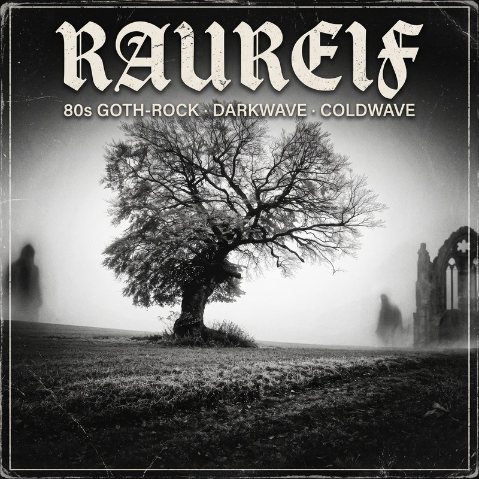

Track 01 • Debüt
Vollkommen und leer
Sisters-Drive durch die kalte Gasse: Harter Flanger-Bass, schneidende Chorus-Gitarren und das Schattenspiel im Laternenlicht.
[Verse 1]
Kalte Pflastersteine, Laterne flackert matt
Schritte hallen einsam durch die tote Stadt
Dein Schatten an der Mauer, verblasst im grauen Dunst
Alles was wir wollten war vergeudete Kunst
[Chorus]
Vollkommen und leer! Das Herz erfriert zu Stein!
Wir wollten alles sein und blieben ganz allein!
Vollkommen und leer! Der Frost schneidet tief!
Vergessen was uns einst ins Dunkel rief!